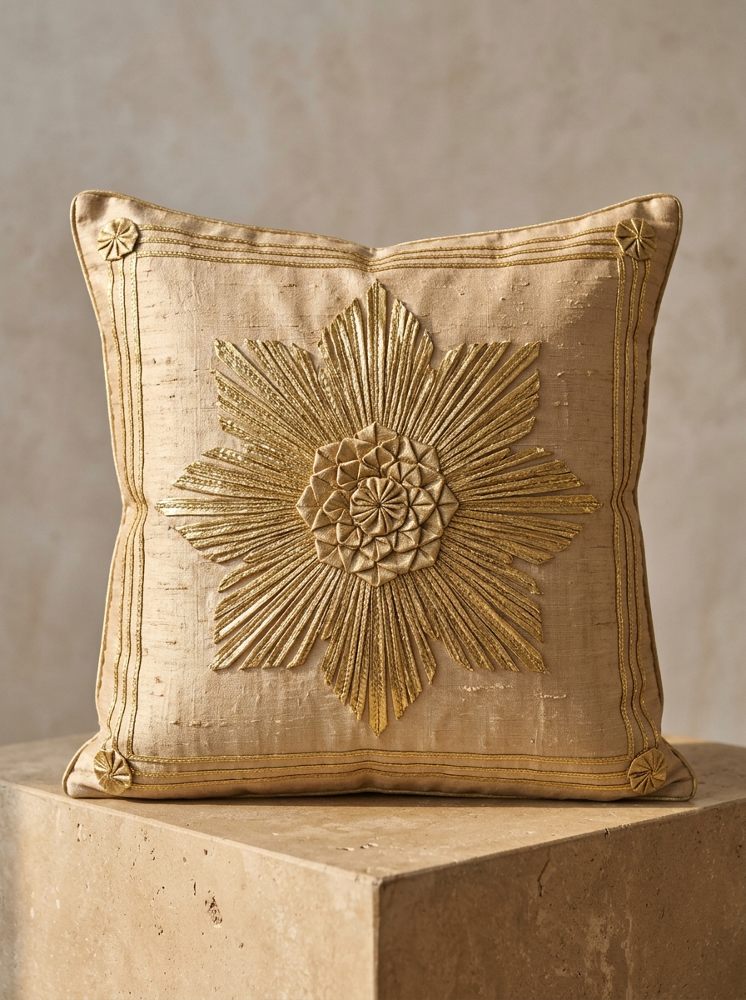

Process & Materiality
An exhaustive technical documentation of the tools, raw substrates, metallurgical compositions, ribbon folding geometries, and multi-stage manual assembly that define Rajasthani Gota Patti. Scroll down to experience the step-by-step craft transformation.
The 5-Stage Craft Transformation
Scroll naturally through the five artisanal stages below to observe the embroidered Gota Patti band transform step-by-step into a finished heirloom clutch.
Design Planning & Khaka Tracing
Master draughtsmen trace symmetrical floral and geometric trellises onto butter-paper stencils (Khaka), perforating thousands of micro-pinholes before transferring the blueprint onto the base textile.
1. Design Planning & Khaka Tracing
Cartographic motifs—floral rosettes, mango keris, and geometric borders—are drawn on vellum sheets and pin-pricked with fine needles (Khaka) for chalk-paste transfer onto tensioned silk.
2. Material Preparation & Lappa Selection
The base silk or velvet is stretched drum-tight across the wooden Adda frame. Beaten silver and gold-dipped zari ribbons (Lappa and Seekhiya) are calibrated by width and tensile luster.
3. Motif Creation & Ribbon Folding
Artisans fold narrow metallic ribbons at crisp 45-degree angles into almond-shaped petals (Patti), diamond facets (Tukdi), and serrated saw-tooth borders (Bijia) with origami precision.
4. Tankaayi Stitching & Zardozi Bordering
Each folded ribbon element is basted with temporary Kachhi Tankaayi and then permanently couched with invisible micro-hemming stitches and framed with coiled Zardozi bullion wire.
5. Final Burnishing & Heirloom Purse Assembly
After reverse-side Ghutai burnishing with polished agate stone for mirror-like planar sheen, the embroidered Gota Patti band is structured into a royal silk clutch with braided zari cords.
Textile Substrates & Metallic Metallurgy
The distinct aesthetic of Gota Patti relies on the tactile tension between gossamer natural base fabrics and planar metallic foil ribbons.
Katan Silk & Mulberry Weave
Tightly spun pure filament silk woven from double twisted yarns. Offers high tensile stability capable of supporting heavy arrays of couched metallic ribbons without puckering.
Silk Georgette & Chiffon
Highly twisted S and Z yarns creating a grainy, fluid handfeel. Traditionally tied and dyed in Shekhawati using Leheriya (diagonal wave) or Bandhani resist before Gota application.
Kota Doria & Fine Muslin
Characterized by distinctive khat square weave structures. The square grid acts as an organic register for geometric alignment of miniature Bijiya borders and single patti leaves.
Asli Zari vs. Contemporary Lurex
Historically, true Gota was woven exclusively from real silver flattened wire (badla) electro-plated with 24K pure gold leaf over an unbleached silk core warp. Since the late 1970s, synthetic polyester ribbons (Lurex) have become common for daywear, while heirloom atelier commissions preserve true precious bullion.
- • Silver wire (92.5%) alloyed with gold wash
- • Warms softly with age to antique amber patina
- • Heavier handfeel and distinct cool metallic touch
- • Reserved for court regalia & heirloom bridal sarees
- • Metallized polyester film laminated on cotton weft
- • High corrosion resistance, does not tarnish
- • Extremely lightweight for fluid contemporary drapes
- • Enables accessible occasion wear & global ready-to-wear
Tools of the Master Karkhana
Every implement in the Gota Patti atelier is hand-forged, honed over generations to minimize puncture stress on delicate woven silk threads.
Adda (Wooden Loom)
Horizontal StretcherA floor-level rectangular wooden frame with four adjustable pegs that holds the silk fabric under calibrated drum-tight tension so couching stitches remain flat.
Khakha (Stencil Sheet)
Perforated VellumHeavy oil tracing paper with needle-pricked holes tracing traditional motifs. Kerosene and chalk paste (Neel) are wiped across to deposit dots onto the fabric.
Thapi & Ghutaayi Stone
Burnishing MalletSmooth wooden paddle (Thapi) and polished river agate or cowrie shell used to burnish the reverse side of the finished embroidery to seal seams and mirror metal reflection.
Chimti & Fine Needles
Tweezer & Sui No. 10Miniature precision brass tweezers for tucking raw frayed ribbon corners under, paired with surgical-thin crewel needles that slip between silk threads without snagging.
Folding, Shaping & Stitching Typologies
Gota Patti differs from surface embroidery because the ornamentation is not stitched thread-by-thread, but constructed from folded metallic ribbons fastened to the base fabric.
Gota Patti (Petal Fold)
Narrow metallic ribbon folded diagonally at 45 degrees, pinched with thumbs into an almond-shaped leaf, trimmed, and edge-hemmed with gold thread.
Gota Tukdi (Diamond Tile)
Medium to wide ribbons sliced with sharp shears into uniform rhomboid and equilateral diamond facets, assembled into mosaic lattices.
Bijiya (Serrated Saw-Tooth)
Thin metallic cord crimped into sharp zigzag chevron points, couched along garment hem edges (Kinari) to create a shimmering defensive border.
Lappa (Solid Bullion Field)
Broad woven ribbon (2 to 4 inches wide) laid flat across borders or pallu panels, producing an uninterrupted golden plane resembling beaten sheet metal.
Macrophotography of Master Craftsmanship
Examining the physical materiality, precision couching stitches, and metallic ribbon crimping under archival museum lighting.

400% Macro Ribbon Fold
Notice the micro-crimped edges of individual gilded leaf ribbons forming a floral rosette on Katan silk, couched with matching crimson silk thread.

Radial Suraj Chakra Couching
Precision concentric placement of folded gold and silver triangles on handspun tussar silk with invisible Pakki Tankaayi edge locks.

Ceremonial Velvet & Silk Drape
The completed textile specimen draped in full silhouette. Notice how the golden Gota ribbons catch natural light diagonally, producing a glowing architectural relief.
Documented Craft Labor & Duration
Based on observational field studies across artisanal karkhanas in Jaipur and Nayla, creating genuine hand-crimped Gota Patti requires specialized division of labor across Adda frames.
Occasion Odhana / Dupatta (Border + Butis)
Standard Shekhawati Leheriya base, 2.5 meters with Bijiya edgeHeirloom Royal Saree (All-Over Jaal Field)
Pure Katan Silk base, 348 individually hand-crimped rosette motifsCouture Bridal Lehenga (16-Kalis Ensemble)
Collaborative team of 4 master artisans seated simultaneously on AddaReferences & Archival Citations
- 1. National Institute of Design (NID): "Craft Documentation of Gota Embroidery in Rajasthan", Ahmedabad Textile Archives.
- 2. John Gillow & Nicholas Barnard: Traditional Indian Textiles, Thames & Hudson, pp. 112–118.
- 3. Calico Museum of Textiles: "Historic Metal-Thread Embroideries of Western India", Ahmedabad Monograph Series.
- 4. T.N. Mukharji (1888): Art-Manufactures of India, Government Printing Press, Calcutta.
All photographic plates sourced from Jaipur Zari Guild Documentation Archive & Bachelor of Design Academic Field Research. All rights reserved.